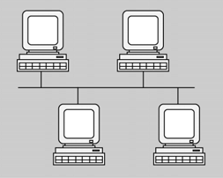

Las redes se crean para administrar las necesidades informáticas de las personas y de las organizaciones. Existen diferentes tipos de redes dependen del criterio que se utilice para diferenciarlas. El criterio principal para diferenciar las redes informáticas se basa en la clasificación para la extensión geográfica. También se pueden diferenciar por otros criterios no menos importantes pero si no tan popular.
Criterios de clasificación de las redes:
-
Extensión geográfica.
-
La titularidad de la red.
-
Cliente-servidor o de igual a igual.
-
La topología de la red.
Extensión geográfica
La localización geográfica de la red es un factor importante a la hora de diseñar y de instalarla correctamente la red de ordenadores. La localización geográfica tiene en cuenta la distancia que hay entre los ordenadores o hosts que intercambiarán información. Dependen de la extensión geográfica podemos encontrarnos diferentes tipos de redes.
Redes de área local (LAN)
Las redes de área local o LAN nacieron para solucionar los problemas de conexión de equipos con diferentes tecnologías o especificaciones. Permitieron conectar todas las estaciones de trabajo, periféricos, terminal y otro dispositivos ubicados dentro de un mismo edificio, facilitando que las empresas utilizaran la tecnología informática para compartir de manera eficiente diferentes recursos.
Las LAN están diseñadas para:
-
Operar en un área geográfica limitada (un edificio).
-
Permitir a sus usuarios acceder a servicios de banda ancha.
-
Proporcionar conectividad con los servicios locales.
-
Conectar dispositivos adyacentes.
Dentro de una LAN puede haber redes más pequeñas y especializadas. Estas redes se utilizan para acceder a sistemas de almacenamiento, dispositivos y sistemas con tecnología de centros de datos, intranets o extranets y VPN.
1. Redes de almacenamiento o SAN. Una red de área de almacenamiento (SAN) es una red de alto rendimiento dedicada a tareas muy concretas, como mover datos entre servidores y ofrecer recursos de almacenamiento. Este tipo de redes SAN instalan fuera de la LAN para evitar el tráfico que ocasionan las conexiones entre clientes y servidores.
La tecnología SAN permite conectividad de alta velocidad entre los ordenadores servidor y de almacenamiento, entre dos ordenadores de almacenamiento o entre dos servidores, como se puede ver en la figura.
Las SAN tienen las siguientes características:
-
Alto rendimiento: Las SAN permiten el acceso concurrente de matrices de disco o cinta por dos o más servidores a alta velocidad, proporcionando un mejor rendimiento del sistema.
-
Disponibilidad: Las SAN tienen una tolerancia incorporada a los desastres, ya que se puede hacer una copia exacta de los datos mediante una SAN hasta una distancia de10 km o 6,2 millas.
-
Escalabilidad: Igual que una XAL / WAN, puede usar una gama amplia de tecnologías. Esto permite una reubicación fácil de datos de copia de seguridad, operaciones, migración de archivos, y duplicación de datos entre sistemas.
2. Redes privadas virtuales. Las redes privadas virtuales (VPN o Virtual Private Network en inglés) como se puede ver en la figura, se crean dentro de la infraestructura de una red pública pero no son redes físicas, sino una organización de una red física, con el fin de dar acceso a determinados usuarios, grupos de trabajo, etc. por la seguridad de los datos.
Hay diferentes tipos de VPN, como se detalla en la tabla. Con una VPN una persona puede acceder a la red de la empresa a través de Internet, haciendo una tunelización segura entre su ordenador personal y un router VPN situado en la sede de la empresa; el ordenador personal puede estar ubicado en cualquier lugar con conexión a Internet, como por ejemplo la oficina de trabajo, la residencia habitual, la segunda residencia, hotel, etc.
| VPN de acceso | Dan acceso remoto a un trabajador en la sede de la red interna o externa, a través de redes públicas (RTC, RDSI, ADSL, etc.). |
|---|---|
| Redes internas VPN intranet | Los servidores web de red interna son diferentes de los servidores web públicos. El servidor web se instala dentro de la red. La tecnología del navegador utiliza como interfaz para que los usuarios accedan a la información. Conectan las diferentes oficinas y trabajadores móviles con la red interna de la empresa, a través de redes públicas, aunque sólo pueden acceder los trabajadores autorizados con privilegios de acceso. |
| Redes externas VPN extranet | Al igual que las internas, pero permiten el acceso a usuarios que no pertenecen a la empresa, utilizan aplicaciones y servicios de la red interna. Si accede mediante contraseñas e identificadores de usuario. |
Redes de área metropolitana (MAN)
Llegó un momento en que empresas con varias sedes en una misma ciudad tenían la necesidad de compartir información de manera segura y rápida.
Las MAN están diseñadas para proporcionar a sus usuarios la distribución de datos interconectando las diferentes XAL.
Redes de área extendida o WAN
Nodo
Genéricamente se denomina nodo cualquier elemento que tiene acceso a una red. Un nodo es el punto final o de unión, que es común para dos o más líneas de una red. Un nodo puede ser un procesador, un controlador, o una estación de trabajo. Sirven como puntos de control en una red, se interconectan mediante enlaces y varían el direccionamiento.
Las redes de área extendida WAN normalmente utilizan líneas de transmisión publicas, propiedad en muchos casos de compañías telefónicas. Estas líneas son compartidas por muchos usuarios, por eso hay unas especificaciones legales, políticas, económicas, etc.
Las WAN están diseñadas para dar conexión a equipos en un área geográfica muy extensa.
Ejemplos de redes de transmisión públicas son:
-
RDSI -red digital de servicios integrados-: Es una red de datos totalmente digital de extremo a extremo. Permite conexiones de hasta 2 Mbps. Las características principales de esta tecnología son la calidad, la flexibilidad, y la velocidad de comunicación.
-
Harxes FDDI –interfaz de datos distribuidos por fibra–: Interfaz de datos distribuida por fibra óptica. Esta tecnología se basa en una estructura de red de doble anillo de fibra óptica, que permite alta velocidad, y grandes distancias. Cuando la fibra óptica se sustituye por cables de pares trenzados se habla de IPDDI (interfaz de datos distribuidos de par trenzado).
-
Redes Frame Relay: Es un red de conmutación de paquetes que se considera la evolución del X25. Se caracteriza por transmitir datos a alta velocidad, la transparencia en los protocolos de comunicación, y la integración de voz y datos. Los usuarios la contratan mediante una tarifa plana de bajo coste.
-
Redes ATM -asynchronous transfer mode (modo de transferencia asíncrona) -: Las características principales son que integra voz, datos e imagen, sin restricción de espacios, es transparente a los protocolos, integra muy bien LAN y WAN, tiene un ancho de banda mayor, hasta 2 Gbps, y tiene apoyo internacional.
-
Una tecnología ligada a la ATM es el xDSL (digital subscriber line), que da acceso a Internet de banda ancha utilizando las líneas analógicas de las compañías telefónicas.
-
Redes de satélites: Son satélites artificiales de comunicaciones, que resuelven problemas de distribución masiva de datos. El señal electromagnética va hasta el satélite y baja de nuevo a la Tierra.
Titularidad de la red
Según las propiedades de la red, podemos clasificar las redes en:
-
Redes dedicadas o privadas. Las líneas de comunicaciones de las redes dedicadas son diseñadas e instaladas por el usuario o administrador del sistema, o bien alquiladas a las compañías de comunicaciones que se dedican a ofrecer estos servicios.
-
Redes compartidas o públicas. En estas redes las líneas de comunicación soportan información de diferentes usuarios. Se trata de redes de servicio público ofrecidas por compañías de telecomunicaciones, por las que se debe pagar una cuota dependiendo de la utilización que se hace. Un ejemplo es la red de telefonía fija, la red de telefonía móvil, RDSI, ADSL, redes de fibra óptica, etc.
Topología de la red
En una red simple, compuesta por sólo algunas computadoras, es sencillo visualizar cómo se conectan los distintos componentes. A medida que las redes crecen, es más difícil recordar la ubicación de cada componente y cómo está conectado a la red. Cuando se instala una red, se crea un mapa de la topología física para registrar dónde está ubicado cada ordenador y como está conectado a la red. El mapa de la topología física también muestra por donde pasan los cables y las ubicaciones de los dispositivos de la red que conectan los ordenadores. En estos mapas, se utilizan iconos para representar los dispositivos físicos reales. Es muy importante mantener y actualizar los mapas de la topología física para facilitar futuras tareas de instalaciones y resoluciones de problemas.
Además del mapa de la topología física, a veces es necesario tener también una representación lógica de la topología de red.
Un mapa de la topología lógica agrupa los ordenadores según el uso que hacen de la red, independientemente de la ubicación física que tengan. En el mapa de la topología lógica se pueden registrar los nombres de los ordenadores, las direcciones, la información de los grupos y las aplicaciones.
La figura y la figura muestran la diferencia entre una topología lógica y física:
La topología de una red nos define la estructura de la red, como es la forma física, como se disponen los ordenadores y cómo acceden al medio. En la tabla se detallan algunas de las características de la topología lógica y física.
-
La topología física nos dice como es la distribución del cableado.
-
La topología lógica nos dice cómo acceden al medio los diferentes dispositivos.
| Topología física Organización del cableado | Estrella Bus Jerárquica Anillo Malla |
|---|---|
| Topología lógica Acceso al medio | Transmisión por difusión: Cada elemento de la red emite sus datos al medio, sin ningún orden establecido Transmisión de testigos: Controla el acceso a la red pasando secuencialmente un testigo eléctrico en cada ordenador |
Topología física
El cableado determina el diseño físico de una red. Según la estructura física del cableado y su distribución geográfica, tendremos una topología diferente de red.
Las distancias entre nodos, las interconexiones físicas, las velocidades de transmisión o los tipos de señales no tienen importancia a la hora de definir la topología. Si una red utiliza diferentes tipos de topologías denomina mixta. Cada topología tiene ventajas e inconvenientes que se detallan en la tabla.
- Topología física en anillo
1. Red en anillo. Es una topología de red en la que cada nodo tiene una única conexión de entrada y otra de salida. Cada nodo se conecta con el siguiente hasta el último, que se debe conectar con el primero. Un ejemplo de topología en anillo es la red en anillo de testigo (anillo simbólico).
El dispositivo encargado de hacer la conexión física al anillo llama MAU (multistation access unit).
- 
- Topologia física en bus
2. Red en bus. Es una topología de red en la que los nodos están conectados a un medio de comunicación común, el bus. Ethernet con cable coaxial es un ejemplo de esta topología.
3. Red jerárquica. Es una extensión de la topología de extrella, en el que cada nodo puede estar conectado a un nodo superior y del que pueden colgar varios nodos inferiores que forman un árbol.
4. Red en estrella: Es una topología de red en la que los nodos están conectados a un nodo central o conmutador que actúa de router para transmitir los mensajes entre nodos.
- Topología física jerárquica
- Topología física estrella
El nodo es el extremo final de una conexión de red o unión de dos o más líneas de la red. Los nodos pueden ser procesadores, controladores y estaciones de trabajo. Los nodos se interconectan mediante enlaces y actúan como puntos de control en la red.
5. Red en malla. Es una topología de red en la que cada nodo está interconectado con uno o más nodos. De este modo, cuando se ha de enviar un mensaje entre dos nodos se buscará la ruta más adecuada. Esta ruta puede depender de los costes económicos, la carga de las otras rutas, la velocidad o cualquier otro parámetro.
| ventajas | desventajas | |
|---|---|---|
| red jerárquica | Sencilla de implementar y extender. Normalmente es económica. | Difícil de administrar El fallo de un nodo deshabilita todo lo que cuelga. |
| Red en bus | Es sencilla de implementar y de extender. Normalmente es la más económica | Longitud de cable y número de estaciones limitados. Coste de administración caro a largo plazo. El rendimiento disminuye al añadir nodos. Si falla algún enlace, todos los nodos quedan aislados. |
| Red en estrella | Es sencilla de implementar y extender, incluso en grandes redes. Normalmente es la más económica. El fallo de un nodo no afecta al resto. Fácil de administrar. | Longitud de cable y número de estaciones limitados. Coste de administración caro a largo plazo. El rendimiento disminuye al añadir nodos. El fallo del nodo central deshabilita toda la red. |
| Red en malla | Alta disponibilidad. Si falla un nodo, puede haber rutas alternativas | Es más cara que otras topologías. |
Topología lógica
Una topología lógica de red se refiere a la forma en que los elementos de la red se comunican con el medio. Los dos tipos más comunes de topologías lógicas son difusión y transmisión de testigo.
Se trata de establecer una serie de reglas que rigen como los dispositivos que comparten medio, pueden enviar o recibir datos.
Los dos métodos básicos de control de acceso al medio para medios compartidos son:
-
Transmisión de testigo o controlado. Cada nodo tiene su tiempo propio para utilizar el medio.
-
Difusión o basado en la contención. Todos los nodos compiten por el uso del medio.
A continuación haremos una explicación más detallada de cada método:
1. Transmisión de testigo o controlado. Al utilizar este método los dispositivos de red cogen turnos, en secuencia, para acceder al medio. Este método también se denomina determinista. Si un dispositivo no necesita acceder al medio, la oportunidad de utilizar el medio pasa al dispositivo en línea siguiente. Cuando un dispositivo coloca una trama en los medios, ningún otro dispositivo no puede hacerlo hasta que la trama no haya llegado al destino y haya sido procesada por el destino. Este método se representa en la figura.
Aunque el acceso controlado está bien ordenado, los métodos deterministas pueden ser ineficientes para que un dispositivo tiene que esperar su turno antes de poder utilizar el medio, como podemos ver en la figura.
2. Transmisión por difusión o basada en la contención. Este método para difusión o no determinista permite que cualquier dispositivo intente acceder al medio siempre que haya datos para enviar. Para evitar el caos completo en los medios, estos métodos usan un proceso de acceso múltiple por detección de portadora (CSMA) para detectar primero si los medios están transportando una señal. Si se detecta una señal portador al medio desde otro nodo, significa que otro dispositivo está transmitiendo. Cuando un dispositivo está intentando transmitir y nota que el medio está ocupado, esperará y lo intentará después de un periodo de tiempo corto. Si no se detecta una señal portador, el dispositivo transmite sus datos. Las redes Ethernet e inalámbricas utilizan control de acceso al medio para contención. Es posible que el proceso CSMA falle si dos dispositivos transmiten al mismo tiempo. esto se llama colisión de datos. Si ocurre, los datos enviados por los dos dispositivos se estropearán y deberían enviar nuevamente.
El métodos de control de acceso al medio por difusión no tienen la sobrecarga de los métodos de acceso controlado. No se requiere un mecanismo para analizar quién posee el turno para acceder al medio, tal como se detalla en la figura. Pero a medida que el uso y el número de nodos aumenta, la probabilidad de acceder a los medios con éxito sin colisión disminuye.
CSMA es generalmente implementado junto con un método para resolver la contención del medio. Los dos métodos más comunes utilizados son:
-
CSMA / detección de colisión. En CSMA / detección de colisión (CSMA / CD), el dispositivo monitoriza los medios para detectar la presencia de una señal de datos. Si no hay una señal de datos, lo que indica que el medio está libre, el dispositivo transmite los datos. Si después se detectan señales que muestran que otro dispositivo estaba transmitiendo al mismo tiempo, todos los dispositivos dejan de enviar y lo intentan después. Las formas tradicionales de Ethernet usan este método.
-
CSMA / prevención de colisiones. En CSMA / prevención de colisiones (CSMA / CA), el dispositivo examina los medios para detectar la presencia de una señal de datos. Si el medio está libre, el dispositivo envía una notificación, a través del medio, sobre su intención de utilizarlo. El dispositivo luego envía los datos. Este método es utilizado por tecnologías de redes inalámbricas 802.11.
Cliente-servidor o de igual a igual
Cuando la gente intenta acceder a información en sus dispositivos, ya sean un ordenador personal o portátil, una PDA, un teléfono o cualquier otro dispositivo conectado a la Red, los datos pueden estar o no almacenadas físicamente a sus dispositivos, y dependiendo de esto encontramos redes cliente-servidor o redes de igual a igual.
Modelo cliente/servidor
Una red cliente-servidor es aquella donde todos los clientes están conectados a un servidor donde se centralizan los diferentes recursos. Estos recursos están a disposición de los clientes cada vez que los solicitan. Esto hace que todas las gestiones que se realizan se concentran en el servidor, que dispone de los requerimientos de los clientes con prioridad, los archivos que son de uso público y los restringidos, los archivos de sólo lectura, los que pueden ser modificados, etc. Este proceso se detalla en la figura y en la figura.
En el modelo cliente / servidor, el dispositivo que solicita información se denomina cliente y el dispositivo que responde la solicitud se denomina servidor. Los procesos de cliente y servidor se consideran una parte de la capa de aplicación. El cliente comienza el intercambio solicitante los datos al servidor, que responde enviando uno o más bloques de datos al cliente. Los protocolos de capa de aplicación describen el formato de las solicitudes y respuestas entre clientes y servidor. Además de la transferencia real de datos, este intercambio puede requerir información adicional, como la autentificación del usuario y la identificación de un archivo de datos para transferir.
Un ejemplo de una red cliente / servidor es un entorno corporativo en el que los empleados utilizan un servidor de correo electrónico de la empresa para enviar, recibir y almacenar correo. El cliente de correo electrónico en el ordenador de un empleado emite una solicitud al servidor de correo por un mensaje no leído. El servidor responde enviando el correo solicitado al cliente.
Aunque los datos generalmente se describen como un flujo del servidor al cliente, algunos datos siempre fluyen del cliente al servidor. El flujo de datos puede ser el mismo en las dos direcciones o incluso ser mayor en la dirección que el cliente al servidor. Por ejemplo, un cliente puede transferir un archivo al servidor con fines de almacenamiento. La transferencia de datos de un cliente a un servidor se conoce como subida y la de los datos de un servidor a un cliente, bajada.
Redes de igual a igual
En una red entre iguales, dos o más ordenadores están conectados por medio de una red y pueden compartir recursos (por ejemplo, impresora y archivos) sin tener un servidor dedicado. Cada dispositivo final conectado (conocido como punto) puede funcionar como un servidor o como un cliente. Un ordenador puede asumir el papel de servidor para una transacción mientras funciona de manera simultánea como cliente para otra transacción. Los papeles del cliente y del servidor se configuran según las solicitudes.
Las redes de igual a igual también se denominan redes punto a punto (peer to peer).
Un ejemplo de una red entre iguales es una simple red doméstica con dos ordenadores conectados que comparten una impresora. Cada persona puede configurar su ordenador para compartir archivos, habilitar juegos en red o compartir una conexión de Internet. Otro ejemplo sobre la funcionalidad de la red punto a punto son dos ordenadores conectados a una gran red que utilizan aplicaciones de software para compartir recursos a través de la Red.
A diferencia del modelo cliente / servidor, que utiliza servidores dedicados, las redes punto a punto descentralizan los recursos en una red como se detalla en la figura. En lugar de ubicar información para compartir en los servidores dedicados, la información se puede colocar en cualquier parte de un dispositivo conectado. La mayoría de los sistemas operativos actuales admiten compartir archivos e impresoras sin requerir software adicional del servidor. Ya que las redes punto a punto generalmente no utilizan cuentas de usuarios centralizados, permisos ni monitores, es difícil implementar las políticas de acceso y seguridad en las redes que contienen más cantidad de ordenadores. Hay que establecer cuentas de usuario y derechos de acceso de forma individual para cada dispositivo.